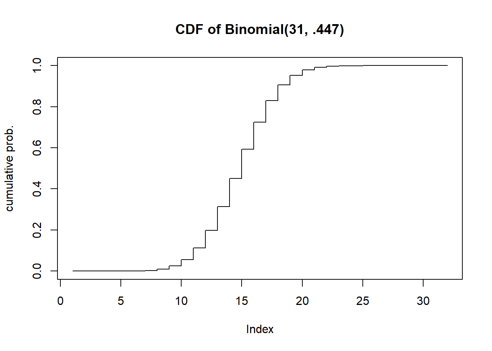

barplot(dbinom(0:31, 31,.447), names=0:31, ylab="probability", main="PMF of Binomial(31,.447)")
A recent national study showed that approximately 44.7% of college students have used Wikipedia as a source in at least one of their term papers. Let \(X\) equal the number of students in a random sample of size \(n = 31\) who have used Wikipedia as a source.
Assuming independence in sampling, and a representative sample, we can use a Binomial distribution with \(n=31\) and \(p=0.447\).
barplot(dbinom(0:31, 31,.447), names=0:31, ylab="probability", main="PMF of Binomial(31,.447)")
plot(pbinom(0:31, 31, .447), type="s", ylab="cumulative prob.", main="CDF of Binomial(31, .447)")
dbinom(17, 31, .447)[1] 0.07532248pbinom(13, 31, .447)[1] 0.451357sum(dbinom(12:31, 31, .447))[1] 0.8020339#or
pbinom(11, 31, .447, lower.tail=FALSE)[1] 0.8020339#or
1-pbinom(11, 31, .447)[1] 0.8020339#P(X at least 15)
sum(dbinom(15:31,31,.447))[1] 0.406024sum(dbinom(16:19, 31, .447))[1] 0.2544758#E(X)=n*p
31*.447[1] 13.857#or you can also do this (but it's too much work)
sum( (0:31) * dbinom(0:31, 31, .447))[1] 13.857#Var(X) = n * p * (1-p)
31 * .447 * (1-.447)[1] 7.662921#or - if you want (but why would you want to?)
sum((0:31 - 31*.447)^2 * dbinom(0:31, 31, .447))[1] 7.662921#SD(X) = sqrt(n*p*(1-p))
sqrt(31*.447*(1-.447))[1] 2.768198#E(4X+51.324) = 4*E(X)+51.324
4*(31*.447) + 51.324[1] 106.752Let \(X\) have discrete uniform PMF on the values \(x\in\left\{-1,0,1\right\}\).
Write the equation for its PMF.
Find \(Pr[X<-1]\) and \(Pr[X\leq -1]\)
Find \(Pr[X>0]\) and \(Pr[X \geq 0]\)
Calculate the CDF from the PDF. Write out an expression for \(F(x)\) and plot the PMF and CDF.
This can be handled mathematically. The formula for \(E(1/(X+1))\) is
\(E(1/(X+1))=\sum_{x=0}^{\infty}\frac{1}{x+1}\frac{\lambda^{x}}{x!}e^{-\lambda}=\sum_{x=0}^{\infty}\frac{\lambda^{x}}{(x+1)!}e^{-\lambda}\)
The trick is to get get the summation to equal 1 and simplify. We multiply by \(\lambda/\lambda\)
\(E(1/(X+1))=\frac{1}{\lambda}\sum_{x=0}^{\infty}\frac{\lambda^{x+1}}{(x+1)!}e^{-\lambda}\)
Now we can make a change of variables: \(y=x+1\) and thus \(x=0\) becomes \(y=1\)
\(E(1/(X+1)) = \frac{1}{\lambda}\sum_{y=1}^{\infty}\frac{\lambda^{y}}{y!}e^{-\lambda}\)
The only thing missing is that the summation starts at \(y=1\) instead of \(y=0\), But for \(Y \sim Poisson(\lambda)\), \(P(Y=0)=e^{-\lambda}\) so this summation is \(1-e^{-\lambda}\).
\(E(1/(X+1)) = \frac{1}{\lambda}(1-e^{-\lambda})\)
\((X+Y)^3 = X^3+3X^2Y+3XY^2+Y^3\) so \(E[(X+Y)^3]=E(X^3)+3E(X^2)E(Y)+3E(X)E(Y^2)+E(Y^2)\)
this is due to independence. Since \(X\) an \(Y\) are independent, so are \(X^2\) and \(Y\), and \(X\) and \(Y^2\). \(E(X)=E(X^2)=E(X^3)=p\) and \(E(Y)=E(Y^2)=E(Y^3)=q\). Thus \(E[(X+Y)^3]=p+6pq+q\)
We can expand the expected value and attempt to find the minimum with respect to \(\theta\). \(E[(X-\theta)^2]=E[X^2-2\theta X+\theta^2]=E(X^2)-2\theta\mu+\theta^2\). Recall that \(Var(X)=E(X^2)-\mu^2\) so \(E(X^2)=\sigma^2+\mu^2\) So we can write \(\Delta(\theta)=\sigma^2 + \mu^2-2\theta\mu + \theta^2\) We want to find what value of \(\theta\) minimizes this function - derivative! \(\Delta'(\theta)=-2\mu+2\theta=0\) thus \(\theta=\mu\) minimizes this.
Let \(Y=\min(X_1, \ldots, X_n)\) If \(P(Y >l)\), that means the minimum exceeds \(l\), so all of the values \(>l\). \(P(X_1 > l)=(100-l)/101\) - you can check: \(P(X_1>0)=100/101\). This is the same calculation for each \(i\). So \(P(Y>l)=\dfrac{(100-l)^n}{101^n}\).
\(E(X)=\sum_{k=0}^n k{n \choose k} p^k(1-p)^{n-k}\)
The first term is zero so we could write
\(\sum_{k=1}^n k{n \choose k} p^k(1-p)^{n-k}\)
Now the following is a fact that is needed but perhaps not well known. It’s the equivalence of \(k{n \choose k}=n{n-1 \choose k-1}\). We make this subsitution
\(\sum_{k=1}^n n{n-1 \choose k-1} p^k(1-p)^{n-k}=np\sum_{k=1}^n {n-1\choose k-1}p^{k-1}(1-p)^{n-k}\)
We could write \(n-k=(n-1)-(k-1)\) and we’ll be making some substitutions: \(m=n-1\) and \(j=k-1\). This lets us write
\(np\sum_{j=0}^m {m \choose j}p^j(1-p)^{m-j}=np\) because the summation =1, as it is just the sum of the pmf of a binomial.
(not for 340) Consider a geometric random variable \(X\) with parameter \(p\). \(p_X(k)=p(1-p)^k\) for \(k=0,1,\ldots\). Show that its mean is \(\mathbb{E}X=(1-p)/p\).
(not for 340) Consider a Poisson random variable \(X\) with parameter \(\lambda\). \(p_X(k)=\dfrac{\lambda^k}{k!}e^{-\lambda}\). Show that \(\text{Var}X=\lambda\).
(not for 340) Consider the uniform random variable \(X\) over values \(1,2,\ldots, L\). Show that \(\text{Var}X=\dfrac{L^2-1}{12}\). Hint: \(\sum_{i=1}^n i = \frac{n(n+1)}{2}\) and \(\sum_{i=1}^n i^2=\frac{n^3}{3}+\frac{n^2}{2}+\frac{n}{6}\)
An audio player uses a low-quality hard drive. The probability that the hard drive fails after being used for one month is 1/12. If it fails, the manufacturer offers a free-of-charge repair for the customer. For the cost of each repair, however, the manufacturer has to pay $20. The initial cost of building the player is $50, and the manufacturer offers a 1-year warranty. Within one year, the customer can ask for a free repair up to 12 times.
The number of failures should follow a binomial distribution with \(n=12, p=1/12\). Thus \(P(X=k)={n \choose k}(\frac{1}{12})^k(\frac{11}{12})^{n-k}\)
The cost is \(50+20X\) So \(E(50+20X)=50+20E(X)=50+20\cdot 12(\frac{1}{12})=70\)
\(N\) follows a binomial distribution with \(n=10000\) and \(p=.000001\)
dbinom(0, 10000, .000001)[1] 0.9900498pbinom(3, 10000, .000001)[1] 1This can be solved directly. \(P(N \geq 1)=1-P(X=0)=1-(1-p)^{10000}\). If we set this to .99 we can solve for \(p\) : \(.99=1-(1-p)^{10000}\) so \(.01 = (1-p)^{10000}\) so \(p=1-.01^{1/10000}\)
1-.01^(1/10000)[1] 0.000460411The number of orders waiting to be processed is given by a Poisson random variable with parameter \(\alpha = \frac{\lambda}{n\mu}\), where \(\lambda\) is the average number of orders that arrive in a day, \(\mu\) is the number of orders that an employee can process per day, and n is the number of employees. Let \(N; = 5\) and \(N< = 1\). Find the number of employees required so the probability that more than four orders are waiting is less than 10%.
Hint: You need to use trial and error for a few \(n\)’s.
lambda=5
mu=1
ppois(4, lambda/(1:10 * mu), lower.tail=FALSE) [1] 0.5595067149 0.1088219811 0.0275432568 0.0091242792 0.0036598468
[6] 0.0016844329 0.0008589296 0.0004739871 0.0002784618 0.0001721156#With 3 employees P(X>4) is less than 10%.If \(Z\sim \text{Normal}(\mu=0, \sigma^2=1^2)\) find
pnorm(2.64, 0, 1, lower.tail=FALSE)[1] 0.004145301pnorm(.87)-pnorm(0)[1] 0.3078498pnorm(1.39, lower.tail=FALSE)*2[1] 0.1645289For the following random experiments, decide what the distribution of X should be. In nearly every case, there are additional assumptions that should be made for the distribution to apply; identify those assumptions (which may or may not strictly hold in practice).
Assume the dart lands somewhere on the board, and any point is equally likely (not a good assumption for a skilled dart thrower). The probability density would be proportional to the distance to the center squared - Suppose the dart board has radius \(R\). Let \(X\) be the distance to the dart from the bullseye. Then \(P(X<r)=\pi r^2 / (\pi R^2)=(r/R)^2\) . The question then is what is \(P(X^2<r)\)? Well, take a square root of both sides. \(=P(X < \sqrt{r})=\frac{r}{R^2}\). This is a uniform distribution’s CDF.
A random proportion you might want to use uniform(0,1) however this is assuming that each proportion is equally likely. This is actually a great example for a beta distribution. Beta distributions are continuous distributions that can be parameterized to model a random proportion and the distribution can can be made to be skewed in different ways.
Let’s assume the sink is filled to the maximum. We drain the sink and start our timer. In this case, it’s reasonable to model the length of time to drain as a normal distribution.
The time it takes to go home could be modeled by a gamma distribution since it is a continuous distribution capped below at 0 and it is a useful way to model the length of time a random process takes to complete.
Let \(X\) be a Gaussian random variable with \(\mu=5\) and \(\sigma^2=16\).
#P(X>4)
pnorm(4, mean=5, sd=4, lower.tail=FALSE)[1] 0.5987063#P(2 <= X <= 7)
pnorm(7, 5, 4)-pnorm(4,5,4)[1] 0.2901688qnorm(.88695, 4)[1] 5.210466qnorm(.1131, 5, 4, lower.tail=FALSE)[1] 9.840823#First find the probability less than 13
p13 <- pnorm(13, 5, 4)
#now we can find the quantile for p13+.0011
qnorm(p13+.0011, 5, 4)[1] 13.08321#double check
pnorm(13.08321,5,4)-pnorm(13,5,4)[1] 0.001100025The number of missed shots before the first basket, assuming independence, can be modeled by a Geometric random variable with parameter \(p=.37\).
Assuming that all 3 digit numbers are equally likely (A reasonable assumption) the number selected can be modeled by a discrete uniform distribution with minimum 100 and maximum 999.
If we drop the cup 20 times, and the result each time is independent with a constant probability of landing right side up, the number of times it does can be modeled by a Binomial random variable with parameters \(n=20\) and \(p\) (unknown).
Geometric random variable (unknown parameter value for \(p\)).
Technically we should use a hypergeometric random variable for this situation (since it is a small population size of 557), but since we do not cover the hypergeometric the closest random variable we have is the binomial.
This is a discrete random variable, but without other information it’s hard to say. The distribution is likely unimodal and bell-curved. You could probably model this using a normal distribution rounded off to the nearest integer.
The observation window is the circular area, and the 10 minutes during observation. Assuming the rate of rainfall is constant, the number of raindrops in the circle can be modeled using a Poisson random variable.
Counting indicates a discrete random variable. A binomial or a rounded normal distribution may be appropriate, but we lack enough details to be sure.
The location of the sprouting grass could be modeled well by a Poisson random variable - the \(\lambda\) parameter would likely be very large, in the range of 1000 or 10000, and as such the distribution would look very much like a normal distribution.
As we define a geometric random variable, we let \(X\) be the number of failures before the first success. The last pat (that causes the burp) is the success in this context. So we could use a geometric random variable, but we would have to add 1 to it in order to count all burps (the failures + 1 success).
Let X and Y be zero-mean, unit-variance independent Gaussian random variables. Find the value of r for which the probability that \((X, Y )\) falls inside a circle of radius r is 1/2.
x <- rnorm(10000)
y <- rnorm(10000)
r <- seq(1.1, 1.2, .005)
p <- 0
for (i in 1:length(r)){
p[i] <- mean(sqrt(x^2+y^2) <= r[i])
}
data.frame(r,p) r p
1 1.100 0.4522
2 1.105 0.4542
3 1.110 0.4576
4 1.115 0.4604
5 1.120 0.4651
6 1.125 0.4674
7 1.130 0.4702
8 1.135 0.4733
9 1.140 0.4755
10 1.145 0.4784
11 1.150 0.4811
12 1.155 0.4845
13 1.160 0.4872
14 1.165 0.4905
15 1.170 0.4934
16 1.175 0.4961
17 1.180 0.4989
18 1.185 0.5016
19 1.190 0.5049
20 1.195 0.5074
21 1.200 0.5099#X^2 + Y^2 ~ Chisq(2)
#so the square root of the 50th percentile from that distribution should be the answer
sqrt(qchisq(.5,2))[1] 1.17741Let \(\Theta ∼ Uniform[0, 2\pi]\).
Yes, they are uncorrelated, because (x,y) can be any point on the circumference of a circle of radius 1 with uniform likelihood. However, they are not independent. If we know the value of \(Y\) for example, there are only 2 possible values of \(X\).
thetas <- runif(10000, 0, 2*pi)
cor(cos(thetas), sin(thetas))[1] -0.0004802019In this case (x,y) can only be found in the first quadrant. In this case they are going to be negatively correlated, since that portion of the unit circle in the first quadrant slopes downwards.
cor(cos(thetas/4), sin(thetas/4))[1] -0.9177495These problems are excellent practice but they are beyond the material we cover in STAT 340.
Calculate the variance of \(X \sim \text{Unif}(a,b)\). (Hint: First calculate \(\mathbb{E}X^2\))
If \(X \sim \text{Binom}(n,p)\) show that \(\mathbb{E}X(X-1)=n(n-1)p^2\).
We can just expand the product \(\mathbb{E}(X^2-X)\) and we can split this up into two expected values: \(\mathbb{E}X^2 - \mathbb{E}X = \mathbb{E}X^2-\mu\). Recall that \(Var(X)=\mathbb{E}X^2-\mu^2\) So \(\mathbb{E}X^2=Var(X)+\mu^2\). For a binomial, \(Var(X)=np(1-p)\) and \(\mu=np\). Thus we have
\(\mathbb{E}X^2 - \mu=[np(1-p) + n^2p^2] - np = np\left(1-p+np-1\right)\)
Tidying up a little bit we get \(np(np-p)=np^2(n-1)\), and we’re done.